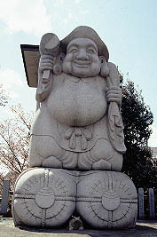
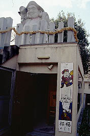
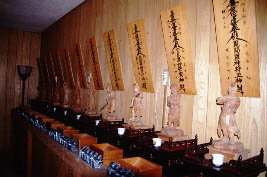
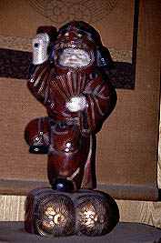
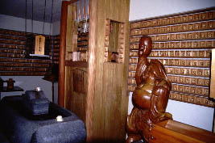
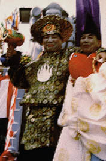
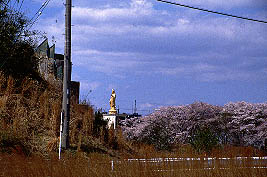
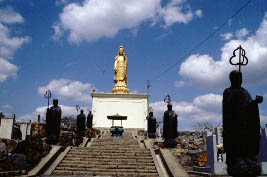
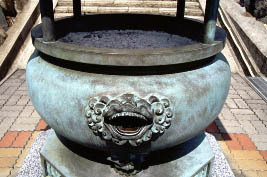
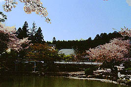

珍寺外伝in小牧/愛知県小牧市
以前、小牧市観光協会が発行しているパンフレットを見て、幾つか怪しそうな所があったので小牧に行ってみた。
妙林寺
「日本一鐘つき大黒天」の文句に引かれて寄ってみる。
行ってみると本堂を始め庫裏や客殿などが解体されていた。
お寺の方の話では建て替え中との事。
日本一の大黒天は石像で4.5メートル。後ろには鐘が吊ってある。
 
で、気になっていたのが台座の「招福めぐり」という看板。お寺の方に聞いてみるとやはり台座の中に入れるそうで、早速鍵を開けてもらう。
内部はS字型の参拝路で十二神将や大黒天などが奉安されている。
  
その中に大黒さまのコスプレ写真がズラリと並んでいるのを見逃さなかった。

聞けば毎年大国さんを決めてこのような格好をさせる祭りをするらしい。
各年の「大国さま」の顔が誇らし気なのが印象的であった。
福厳寺
  
小牧市の東のはずれにある福厳寺。墓地の中に金の大観音が建っている。大観音といっても台座を抜いたら4〜５メートル程度のもの。ま、別にいいんだけど。で、観光協会のパンフに載っていて気になっていたのが「お経を読む香炉」、大観音の前にありました。香炉の手前に着いているナゾの生き物の口に小銭を入れるとお経のテープが回り出すモノ。こんなモンだと想像はしてたんですけどね。思わず膝カックン来ちゃいました。

で、本堂。池の向こうに大きな桜の木、裏手は鬱蒼とした山。そんな絵になり過ぎる風景の中、山門と本堂が見える。山門を潜ろうとすると「この寺院は観光寺ではないので信徒以外の立ち入りは禁止」というような意味の注意書きがあった。お経を読む香炉とかいって観光パンフに載っている寺なのだが観光寺ではないそうだ。
ま、そういうことなら敢えて私も入るまい。これを読んでいる皆さんも行かないように、ってゆーか行ってもつまんないよ。
何なんだろうねえ、こーゆー入場制限したがる寺って。
2000.4.
珍寺大道場 HOME